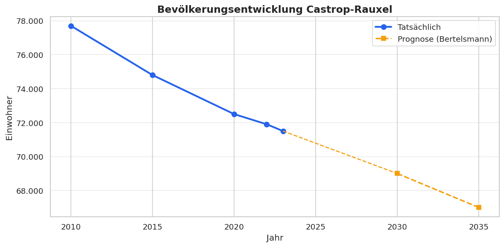
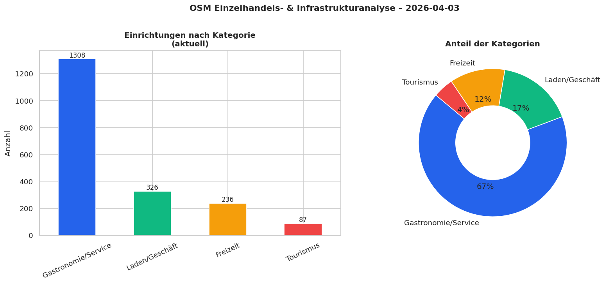

Einwohner (2023)
71.500
↓ -0,6% ggü. Vorjahr
Einrichtungen (OSM)
1956
Läden, Gastronomie, Freizeit
Events gescrapt
36
Stadtwebsite heute
Neu (letzte Änderung)
0
Neue Einrichtungen in OSM
Geschlossen
0
Aus OSM entfernt
Bevölkerungstrend
Einrichtungen nach Kategorie
🏪 Aktuelle Einrichtungen (Top 50)
| Name | Kategorie | Typ | Adresse | Öffnungszeiten |
|---|---|---|---|---|
| – | Tourismus | information | nan nan, nan | nan |
| – | Gastronomie/Service | post_box | nan nan, nan | nan |
| – | Gastronomie/Service | parking | nan nan, nan | nan |
| – | Gastronomie/Service | recycling | nan nan, nan | nan |
| – | Gastronomie/Service | recycling | nan nan, nan | nan |
| – | Gastronomie/Service | pub | nan nan, nan | nan |
| – | Laden/Geschäft | kiosk | Cottenburgstraße 68, 44575 | nan |
| Postbank | Gastronomie/Service | bank | Lönsstraße 20, 44575 | Mo-Fr 09:30-18:00; Sa 10:00-13:00; PH,Su off |
| – | Gastronomie/Service | recycling | nan nan, nan | nan |
| HEM | Gastronomie/Service | fuel | Herner Straße nan, 44575 | nan |
| – | Gastronomie/Service | parking | nan nan, nan | nan |
| Swabedo | Gastronomie/Service | kindergarten | nan nan, nan | nan |
| – | Gastronomie/Service | post_box | Ringstraße 25, 44575 | nan |
| Aral | Gastronomie/Service | fuel | Wittener Straße 95, 44575 | nan |
| – | Gastronomie/Service | post_box | Dortmunder Straße 185, 44577 | nan |
| – | Gastronomie/Service | recycling | nan nan, nan | nan |
| Altes Rathaus | Tourismus | attraction | nan nan, nan | nan |
| – | Gastronomie/Service | parking | nan nan, nan | nan |
| Targobank | Gastronomie/Service | bank | Am Markt 24 - 25, 44575 | Mo-Fr 10:00-13:00, Mo,Tu,Th 14:00-18:00; PH,Su off |
| Sparkasse Vest | Gastronomie/Service | bank | Am Markt 13, 44575 | Mo-Fr 09:00-12:30; PH,Sa,Su off, Mo 14:00-16:00, Th 14:00-18:00 |
| Haus Daun | Gastronomie/Service | restaurant | Bochumer Straße 266, 44575 | Mo-Su,PH 13:00-21:00 |
| – | Gastronomie/Service | bench | nan nan, nan | nan |
| – | Gastronomie/Service | waste_basket | nan nan, nan | nan |
| – | Gastronomie/Service | bench | nan nan, nan | nan |
| Erinpark/Starterzentrum | Gastronomie/Service | parking | nan nan, nan | nan |
| – | Gastronomie/Service | toilets | nan nan, nan | nan |
| – | Gastronomie/Service | parking | nan nan, nan | nan |
| Katholischer Kindergarten St. Marien Merklinde | Gastronomie/Service | kindergarten | nan nan, nan | nan |
| – | Gastronomie/Service | recycling | nan nan, nan | nan |
| Grundschule Deininghausen | Gastronomie/Service | parking | nan nan, nan | nan |
| – | Gastronomie/Service | post_box | Am Markt 17, 44575 | nan |
| Cafe Extrablatt | Gastronomie/Service | cafe | nan nan, nan | nan |
| Altstadtapotheke | Gastronomie/Service | pharmacy | Am Markt 18, 44575 | Mo,Tu,Th,Fr 08:00-18:30; Sa 09:00-13:00; We 08:00-13:00; PH,Su off |
| – | Gastronomie/Service | post_box | Harkortstraße 2, 44577 | nan |
| – | Gastronomie/Service | post_box | Auf der Flur nan, 44581 | nan |
| – | Gastronomie/Service | recycling | nan nan, nan | nan |
| St. Marien | Gastronomie/Service | place_of_worship | nan nan, nan | nan |
| – | Gastronomie/Service | recycling | nan nan, nan | nan |
| Naxos Grill Restaurant | Gastronomie/Service | fast_food | Wittener Straße 348, 44577 | nan |
| Chemische Reinigung Kalhöfer | Laden/Geschäft | dry_cleaning | nan nan, nan | Mo-We,Fr 08:00-15:00, Th 08:00-18:00 |
| – | Gastronomie/Service | recycling | nan nan, nan | nan |
| – | Gastronomie/Service | recycling | nan nan, nan | nan |
| – | Gastronomie/Service | recycling | nan nan, nan | nan |
| – | Gastronomie/Service | recycling | nan nan, nan | nan |
| – | Gastronomie/Service | post_box | Lange Straße 90, 44579 | nan |
| – | Gastronomie/Service | post_box | nan nan, nan | nan |
| – | Gastronomie/Service | post_box | Bochumer Straße 273, 44575 | nan |
| – | Gastronomie/Service | post_box | nan nan, nan | nan |
| – | Gastronomie/Service | bench | nan nan, nan | nan |
| – | Laden/Geschäft | kiosk | nan nan, nan | nan |
📅 Aktuelle Veranstaltungen
| Titel | Datum | Ort | Link |
|---|---|---|---|
| ServiceBürgerservice A-ZServiceportalBürgerbüroIdeen- und MängelmelderNotdienste | nan | Castrop-Rauxel | → Link |
| Meine StadtStadtinformationÜbersichtWissenswertesÜbersichtStadtgeschichteStatist | nan | Castrop-Rauxel | → Link |
| StadtinformationÜbersichtWissenswertesÜbersichtStadtgeschichteStatistikWappen un | nan | Castrop-Rauxel | → Link |
| WissenswertesÜbersichtStadtgeschichteStatistikWappen und StadtnameEhrenbürger | nan | Castrop-Rauxel | → Link |
| TourismusÜbersichtVeranstaltungenStadtporträtSehenswertesGeoportal | nan | Castrop-Rauxel | → Link |
| StadtentwicklungÜbersichtEntwicklung der StadtteileÜbersichtISEK MerklindeISEK S | nan | Castrop-Rauxel | → Link |
| Entwicklung der StadtteileÜbersichtISEK MerklindeISEK StadtmittelpunktSpiel-, Sp | nan | Castrop-Rauxel | → Link |
| Spiel-, Sport- und Bewegungspark am Hallenbad | nan | Castrop-Rauxel | → Link |
| Zukunftsfähige Innenstädte und Ortstzentren | nan | Castrop-Rauxel | → Link |
| MobilitätÜbersichtNahmobilitätskonzeptMitarbeit beim Nahverkehrsplan | nan | Castrop-Rauxel | → Link |
| Kultur und FreizeitÜbersichtVeranstaltungenÜbersichtVeranstaltungskalenderKirmes | nan | Castrop-Rauxel | → Link |
| VeranstaltungenÜbersichtVeranstaltungskalenderKirmesWochenmärkteMittelaltermarkt | nan | Castrop-Rauxel | → Link |
| Veranstaltungen | nan | Castrop-Rauxel | → Link |
| Kommende Veranstaltungen | So., 08.03.2026, 20:00 Uhr | Stadthalle,Europaplatz 6-10,44575Castrop-Rauxel | → Link |
| Tickets!Edelle - a night about Adele | So., 08.03.2026, 20:00 Uhr | Stadthalle,Europaplatz 6-10,44575Castrop-Rauxel | → Link |
| Tickets!"The Times They Are A-Changin\'" Bob Dylan und seine Lieder | Mi., 11.03.2026, 20:00 Uhr | Stadthalle,Europaplatz 6-10,44575Castrop-Rauxel | → Link |
| MJ: THE LEGEND - Ein symphonisches Erlebnis LIVE IM KONZERT | Fr., 20.03.2026, 19:30 Uhr | Stadthalle,Europaplatz 6-10,44575Castrop-Rauxel | → Link |
| Tickets!Heinz Erhardt und Freunde | Sa., 21.03.2026, 20:00 Uhr | Stadthalle,Europaplatz 6-10,44575Castrop-Rauxel | → Link |
| Tickets!Der Theatermacher | So., 12.04.2026, 18:00 Uhr | Stadthalle,Europaplatz 6-10,44575Castrop-Rauxel | → Link |
| Tickets!The 12 Tenors - Songs of Eternity | Do., 16.04.2026, 20:00 Uhr | Stadthalle,Europaplatz 6-10,44575Castrop-Rauxel | → Link |
| Tickets!Tina - The Rock Legend | Do., 23.04.2026, 19:30 Uhr | Stadthalle,Europaplatz 6-10,44575Castrop-Rauxel | → Link |
| Tickets!DAS RUHRICAL - Das Ruhrgebietsmusical - Radio Ruhrpott | Fr., 24.04.2026, 19:00 Uhr | Stadthalle,Europaplatz 6-10,44575Castrop-Rauxel | → Link |
| Tickets!Hakuna Matata - Die einzigartige große Kindermusical-Gala | So., 26.04.2026, 16:00 Uhr | Stadthalle,Europaplatz 6-10,44575Castrop-Rauxel | → Link |
| Tickets!Kaffee, Kuchen, Knallerfrauen - Das Muttertags Special - | So., 10.05.2026, 17:00 Uhr | Stadthalle,Europaplatz 6-10,44575Castrop-Rauxel | → Link |
| Tickets!Micky Beisenherz - Apokalypse & Filterkaffee - Castrop Special | Sa., 23.05.2026, 20:00 Uhr | Stadthalle,Europaplatz 6-10,44575Castrop-Rauxel | → Link |
| Tickets!TOYPLOSION 4 - „most powerful retro toyshow" | Sa., 12.09.2026, 10:00 Uhr | Stadthalle,Europaplatz 6-10,44575Castrop-Rauxel | → Link |
| Tickets!Mirja Boes & die HonkeyDonkeys - carpfe diem! | Sa., 19.09.2026, 20:00 Uhr | Stadthalle,Europaplatz 6-10,44575Castrop-Rauxel | → Link |
| Tickets!Tony Bauer - Fallschirmspringer | Sa., 17.10.2026, 19:30 Uhr | Stadthalle,Europaplatz 6-10,44575Castrop-Rauxel | → Link |
| Tickets!Hans Werner Olm - Hatta | Sa., 24.10.2026, 20:00 Uhr | Stadthalle,Europaplatz 6-10,44575Castrop-Rauxel | → Link |
| Tickets!3. Castrop-Rauxeler Lachnacht | Fr., 06.11.2026, 20:00 Uhr | Stadthalle,Europaplatz 6-10,44575Castrop-Rauxel | → Link |